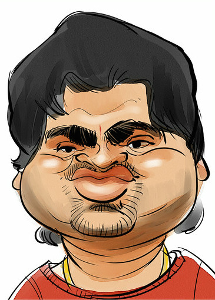
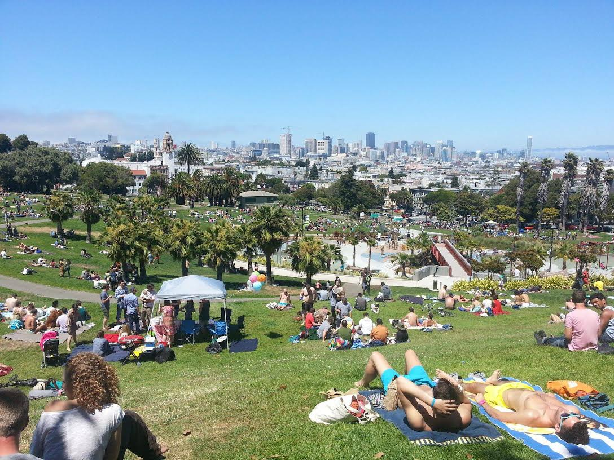
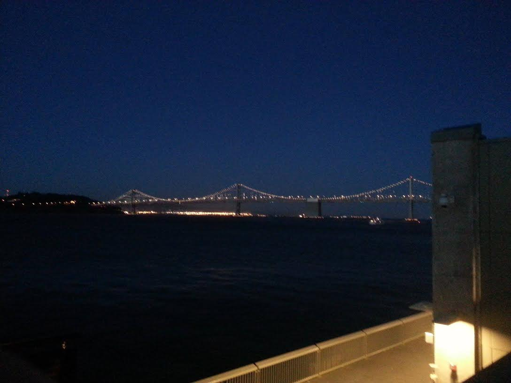
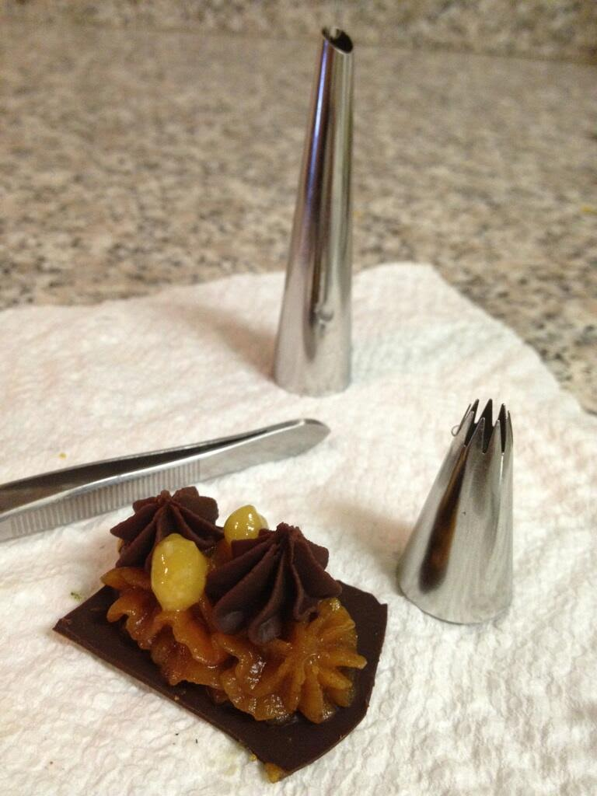
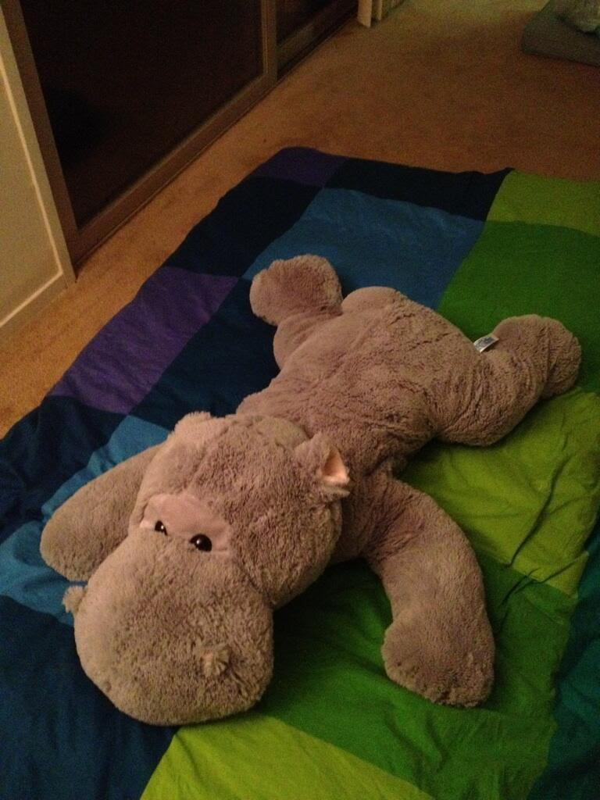
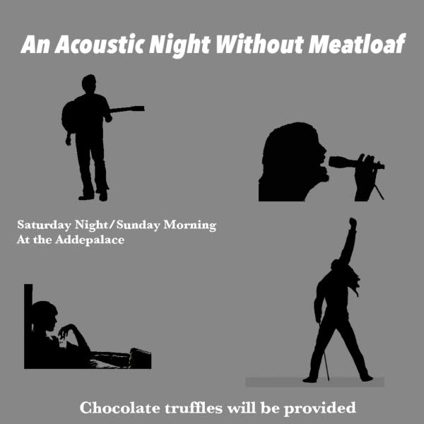
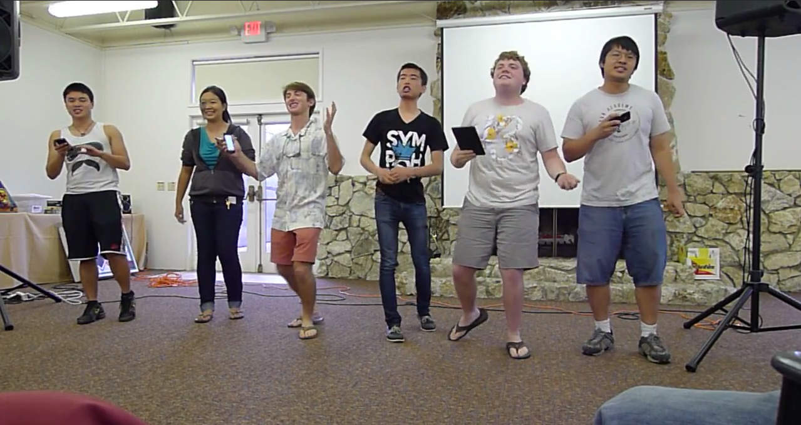
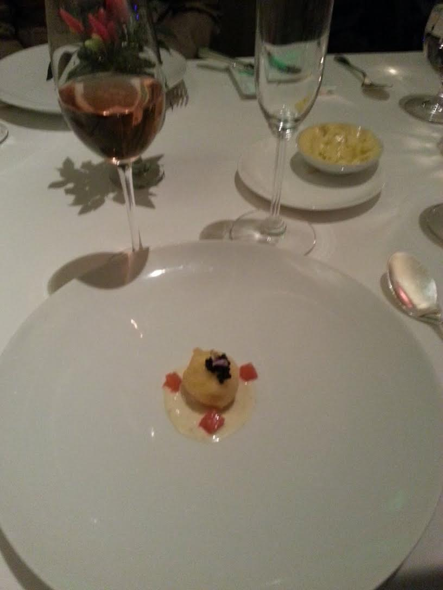
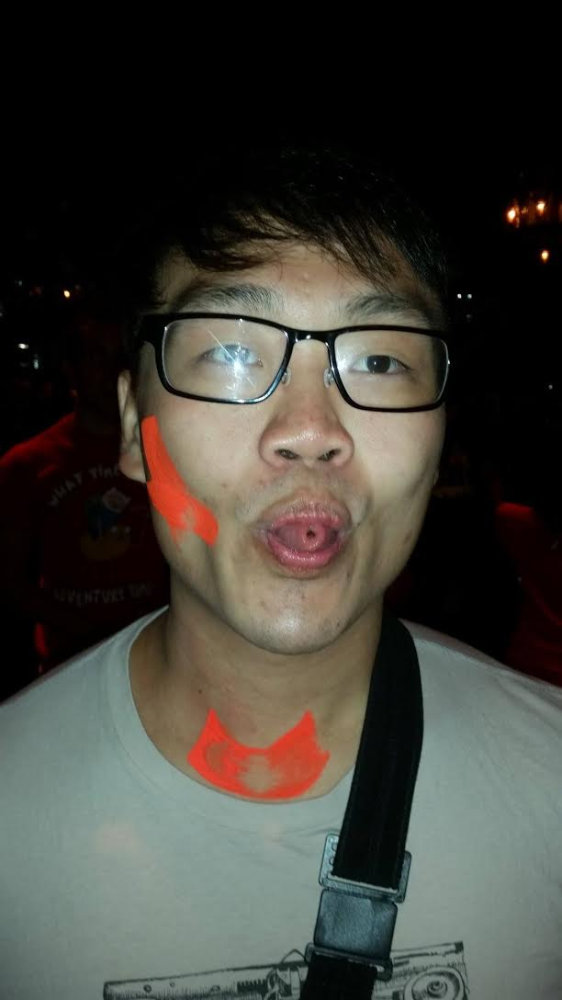
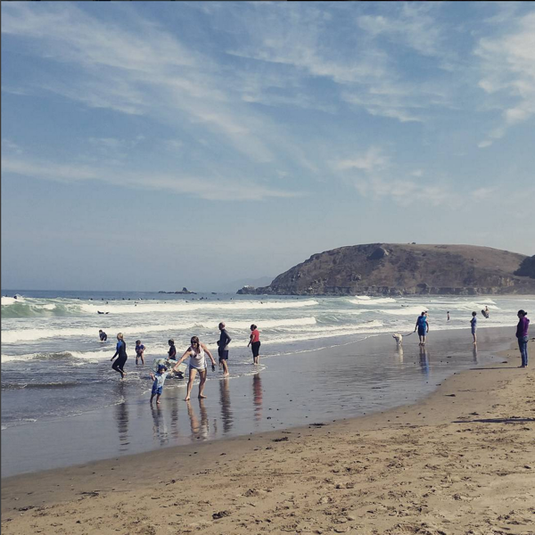

Dylan's Addepar Story
An Audiovisual Journey
Use the left and right arrow keys to navigate
(Or, for the keyboard-averse, use the left and right arrow icons on the side of each page)
Works best if you wait for everything to load before starting. Not well optimized thanks especially to the Spotify API. If you keep seeing the same two or three songs over and over, try refreshing. Also not optimized for resolutions smaller than 1280x1084.
It’s my final week at Addepar, and I don’t feel like leaving without enshrining some of the many memories you have all given me. Things won’t be the same without you all, and I hope every one of you stays in touch.
As such, I've put together this Addestory to capture as much of it as I can, highlighting it using musical selections, photos (most of which I've shamelessly stolen from other people), and words (most of which can be safely ignored).
Also, Karthik is probably ashamed of all of you for clicking random links. 
Day One
My Addepar internship started May 28, 2013, but I moved into the Addepalace on the Saturday before. Despite it being my second time living in California, I was quickly informed by my new roommate Carter that the first time had not counted, as I hadn’t yet eaten In-And-Out.
The rest of the Addepar 2013 intern class moved in over the next couple of days. Pretty much all of you know me, Carter, and Damien. The other three were Joy, Raymond, and Evan. In spite of (or maybe because of) the close living quarters, we all became close friends quickly.
I liked playing music in the Addepalace; one night using the Addepalace Twitter account Raymond and I had a discussion about the song Synthetica, hence its position as the first song in my playlist.
Before we had any official intern events, Robin and Will Chu invited us up to the city to explore. We visited Dolores Park and hung out around the Mission, generally having a pretty good time. The other four interns there (Evan hadn’t started yet) will remember this as the day I lead them to believe that a 2 mile hike to the 22nd street Caltrain station would be worthwhile.
One of our first intern activities was a trip to the Exploratorium. It was a spectacularly fun day.
Several things define the 2013 Addepalace (there was only one back then). Dylan will probably wake you up by singing in the morning. Birds are constantly plotting their attack against the palace. Air dusters are for spraying in people’s faces late at night. Gordon. Electric razors turn on when you least expect them to. Donuts cannot be purchased without donut accessories. The best, though, were Joy’s cooking and confectionery experiments.
OK, fine, the donut accessories were pretty good too.
Summertime!
We used to visit the Shadow’s pool a lot, and share a lot of music. “Summertime,” the second playlist song, is from a playlist I made at the Addepalace to share music with everyone else. “National Anthem,” however, stole the show from that playlist when Carter danced to it on roller skates while holding a bottle of wine.

A special surprise announced turned out to be ice cream and neither Meatloaf or meatloaf, though “I Would Do Anything for Love” still made it onto the companion playlist. “An Acoustic Evening with Meatloaf” didn’t happen, but we held a protest “concert” anyways. From haikus in the bathrooms to our wonderful shirts, I’ll never forget all the sometimes silly, sometimes serious, always amazing work our design team puts together. This was (clearly) not one of them; I made it on my laptop. From the night without meatloaf I’ve selected the overly appropriate “All My Friends.”

My first Addepar hackathon was unlike any I’d ever experienced before. Hana, you had me at “midnight barbecue.”

And then, of course, came the legendary 2013 Summer Retreat. Words don’t do it justice. 
Other choice memories from that weekend: trivia Team Humility which to this very day will not accept their loss and move on, Eric Tung’s amazing puzzle competition, Monterey Aquarium, the ropes instructor asking if Addepar was a clothing label, and the Tobin load balancer dance.
This was the first bottle of alcohol I purchased legally in the United States. Time was about 1 AM, I officially turned 21 on the Caltrain back down from the city. It was a bittersweet moment, since it also meant my internship was coming to an end.
That didn’t mean the summer was over though! For Raymond’s last weekend (and most of our penultimate weekends) we went out to Chez TJ. The meal was ridiculously expensive but so much fun. Food is pictured at actual size.
Woah...it just got dark there for a second. Did everyone else see that?
We're in 2014 now.
When I got back to Addepar, there were tons of new faces (and Andy). Right after I started was the 2014 summer retreat, which was a great opportunity to meet all the new Addepeople and catch up with everyone else. 
Shortly after that was an Addepar kickball game up in the city against Firm 14. After the kickball game (an Addepar victory), we went out to Nihon for whisky. We closed the night off with karaoke at Pandora, where amongst a large set of memorable songs, Greenbaum and I got onstage to do a rendition of Killing in the Name.
For the bugathon, I made a playlist with a bunch of bug-themed but fit for coding music on it.
The 2014 Holiday Party was a huge blast...this photo sums it up well.
I spent New Years 2014 hanging out with Matt Reed, Daisy, and Leo. We went to a barbecue pop-up and then rung in the New Year with some music.
I visited Addepar's New York Office twice while I was here, the first time in the dead of winter and the second time at the height of summer (I have yet to try a "normal" season there). The photo is from my second trip.
The Tahoe retreat was probably my favorite Addepar trip. Snowball fights, Jenga heights, hot tub nights, and wondrous sights.
Joshe and I covered the infamous Simon (and Garfunkel) version of Everything is Awesome, " Everything is Broken," for the retreat.
The show-stealing number, though, was Greenbaum's performance of Turn Down for What. Karaoke seems to be a running theme, here...
Immediately after Tahoe, I boarded a plane alongside Phil, Cyril, and Alex bound for Portland to attend the 2015 Ember Conf. In addition to meeting a ton of cool new people and learning about cutting-edge developments in the Ember world, Phil got to dress up as the Tomster!

After Ember Conf, we came back to Addepar to participate in the winter hackathon. Our portal project got off the ground late and didn't totally hang together, but Christina made a pretty sweet Dylan White Noise Generator. Feel free to use this around the office.
Fast forward a bit, and summer had arrived again! The 2015 summer intern class started, I got us slightly lost (I maintain we were only misplaced) on our way to the waterfall, the Miley Cyrus Greatest Hits car was born (its greatest hit was Derek Brown's rear bumper), and Cyril started teaching us to surf like in Point Break.

I participated in a fantasy hockey league with fellow Addepeeps, and came in second place to Carter. This didn't matter though, because the Chicago Blackhawks still soared to yet another Stanley Cup Victory! I watched the final game in NY with Ross and Joshe, though I'd watched earlier games with Salim, Rising, and a ton of other Addepar hockey fans.
Towards the end of the summer, Sreenath, Diane, Nick, and I took a road trip to Yosemite National Park. 10 hours of music/driving and 6 hours of hiking makes for a pretty full day.

My first trip to LA was recruiting at Harvey Mudd with Rohan and Brie. Technically we shouldn't have even flown into LA, but things happen (that's all they ever do). Thanks to Bluetooth in our rental car, the hour and a half drive back to LAX from the college was made memorable by listening to some LA classics (and of course, great conversations).
Day Zero
And that brings us to...now.
Unfortunately, my Addepar journey comes to an end here.
Like I said in my email, I've had an amazing time at Addepar. It makes me sad to think about all the people and memories I'll be leaving behind.
In fact...
But don't worry! I'll still be around, and I hope you all will keep in touch.
I'm moving to San Fransisco, so let's meet up around there and have a ton of fun.
Let's all grab drinks sometime this week.
The End
Here's a Google Music Playlist of all the songs for those of us without Spotify.
/